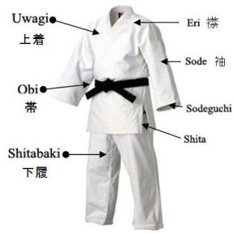

L'équipement

Les pratiquants du Judo sont des judokas. Ces derniers portent pour leurs pratiques des JUDOGI appelés couramment de nos jours, Kimono. La tenue est généralement blanche mais elle peut aussi être bleue. Elle est particulièrement en vigueur lors des compétitions afin de distinguer les combattants.
La veste du judogi est tissée d’un coton assez épais et solide contrairement au pantalon. Le judogi doit toujours être propre et soigné. La veste est tenue par une ceinture dont la couleur désigne le grade du judoka.
La technique de noeud pour une bonne tenue de la veste s’acquière au fil des pratiques. Les hommes sont torse nu sous leur veste alors que les femmes portent un tee-shirt blanc.
Le Judo se pratique pieds nus. En dehors du tatami, une paire de sandales japonaises, les ZOORI est généralement utilisée. Cet élément n’est cependant pas du tout obligatoire : une sandale quelconque est suffisante actuellement.
Jusqu’à la ceinture marron incluse, le passage de passage de grade se déroule en général à la fin de la saison avec son professeur. Le Judoka doit démontrer sa maîtrise de techniques enseignées durant la saison sportive. Ces techniques sont à effectuer avec un partenaire : Tori, celui qui saisit, et Uke celui qui « reçoit » l’action de son partenaire.
Les ceintures de couleurs ont été inventées en Angleterre au milieu des années 1920 puis introduites en France par le professeur Mikinosuke Kawaishi. On trouve dans l’ordre les ceintures : blanche, jaune, orange, verte, bleue, marron (la ceinture violette a été retirée depuis la mise en place des ceintures bicolores : blanche-jaune, jaune-orange, orange-verte, verte-bleue) ; la ceinture verte-bleue a été abandonnée lors du passage de l’âge requis de 16 ans à 15 ans pour l’obtention du 1er dan) et la fameuse ceinture noire ainsi que deux ceintures supérieures : une rouge et blanche du 6e au 8e dan, une rouge pour 9e et 10e dan Symboliquement donné à Jigoro Kano, le fondateur du judo, après sa mort.
Une ceinture particulière, la ceinture blanche large, couleur des débutants, pour signifier que l’on n’a jamais tout appris. Il existe aussi des grades alternatifs pour évaluer et récompenser les plus jeunes (blanche-jaune, jaune-orange, orange-verte), on trouve aussi, dans la catégorie éveil-judo, les ceintures blanches à 1 ou 2 « lisérés » horizontaux. Il se peut aussi d’avoir des barrettes à la place d’une ceinture blanche-jaune. Ce qui donne une ceinture blanche avec une barrette jaune à coudre, ainsi de suite jusque parfois trois barrettes (en Belgique).
| Grade | Nom | Couleur | Répresentation |
|---|---|---|---|
| 9 kyu | Ku-kyu | Blanche | |
| 8 kyu | Hachi-kyu | Blanche-jaune | |
| 7 kyu | Sichi-kyu | Jaune | |
| 6 kyu | Roku-kyu | Jaune-orange | |
| 5 kyu | Go-kyu | Orange | |
| 4 kyu | Shi-kyu | Verte-orange | |
| 3 kyu | San-kyu | Verte | |
| 2 kyu | Ni-kyu | Bleue | |
| 1 kyu | Ichi-kyu | Marron |